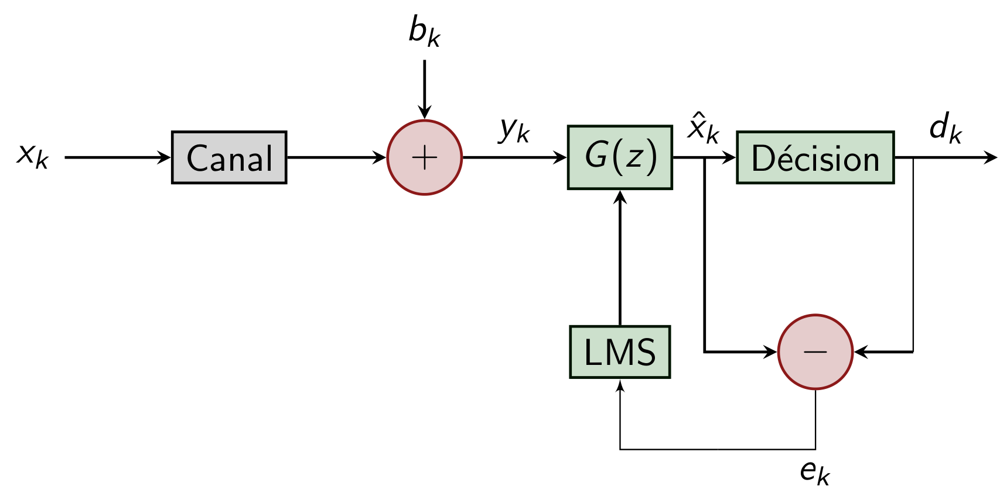

égaliseur_rif_création
Création d'un égaliseur basé sur un ou des filtres RIF ajustés itérativement.
Espace de nom : tsd::telecom
Prototype
sptr<FiltreGen<cfloat>> égaliseur_rif_création(sptr<FormeOnde> forme_onde, cstring structure, cstring fonction_erreur, entier K, float α, entier N1, entier N2)
Paramètres
| forme_onde | Forme d'onde (utilisée seulement si la fonction d'erreur est basée sur la décision symbole). |
| structure | Structure d'égalisation (directe : "ffe", ou avec rétro-actions : "dfe"). |
| fonction_erreur | Fonction d'erreur (basé sur la décision symbole : "dec", ou constant modulus algorithm : "cma"). |
| K | Facteur de sur-échantillonnage. |
| α | Taux de mise à jour pour l'algorithme LMS. |
| N1 | Nombre de coefficients du filtre RIF d'égalisation. |
| N2 | Nombre de coefficients du filtre RIF pour les rétro-actions (seulement si structure DFE). |
Description
Création d'un égaliseur, échantillonné soit à la fréquence syumbole ( \(K = 1\)), ou échantillonné avec une période fractionnaire ( \(K > 1\)). Les structures d'égalisation suivantes sont possibles :
- Feed Forward Equalization (FFE)
(structure = "dde"): Un filtre RIF est réglé (à chaque période symbole) afin de minimiser le carré de l'erreur de sortie. - Decision Feedback Equalization (DFE)
(structure = "dfe"): A la fois un filtre RIF direct (fonctionnant à \(K\cdot f_{symb}\)) et un filtre RIF de rétro-action (fonctionnant à la fréquence symbole) sur les décisions sont utilisés.
Les fonctions d'erreur suivantes sont possibles :
- Basé sur la décision symbole (
errf = "slicer") : \(E=(d-y)^2\). Avec cette fonction d'erreur, l'algorithme est aussi appelé LMS (Least Mean Square). - Amplitude constante (CMA / Constant Modulus Algorithm)
(errf = "cma")\(E=\left(R-|y|^2\right)^2\)

Egalisation FFE